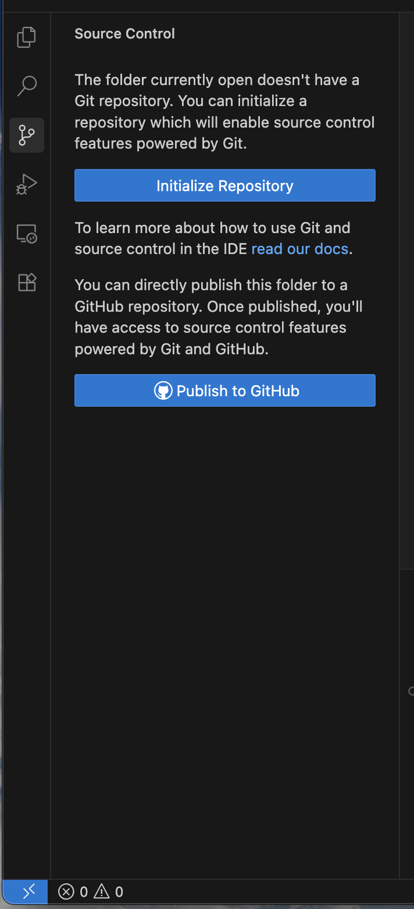
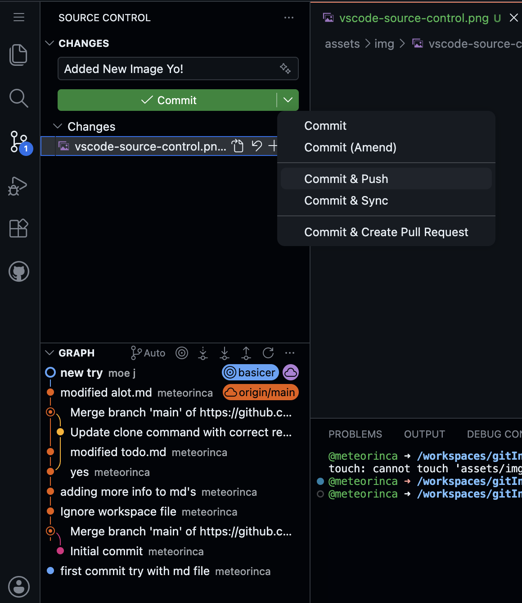
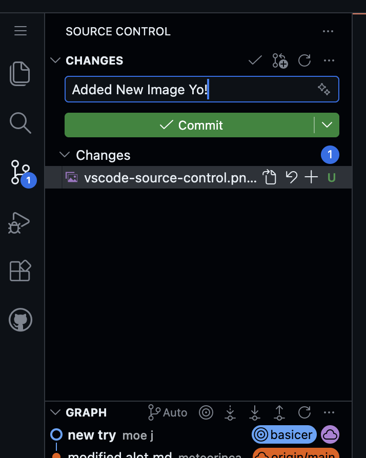

Beginner Git Guide
Git is Basically an Infinite Undo Button
And it is wireless saving for almost anything you make. It does not have to be code.
Imagine you are writing a book. You write a chapter, save it, then rewrite it completely. A week later, you desperately want that original version back. Without Git, it may be gone forever. With Git, you can go back to the old version, almost like it never disappeared.
Here is the mental model: Git takes a complete snapshot of your entire project whenever you choose. Think of it like hitting save in a video game, except you get endless save slots that you can jump back to at any time.
Messed up? Rewind. Want to try something wild without breaking what already works? Create a parallel version, experiment freely, and either keep it or throw it away. No harm done.

The wireless saving part means your work does not only live on your computer. Those snapshots can be sent to a place like GitHub, so if your laptop has an unfortunate coffee accident, your project history is still safe online.
You can grab a new computer, pull everything down, and get back to work from the same saved history.

The big idea is simple: Git lets you save your work, travel back in time, try risky changes safely, and keep a copy online.
